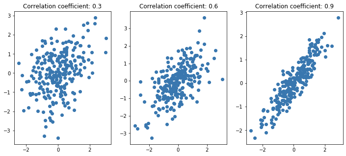
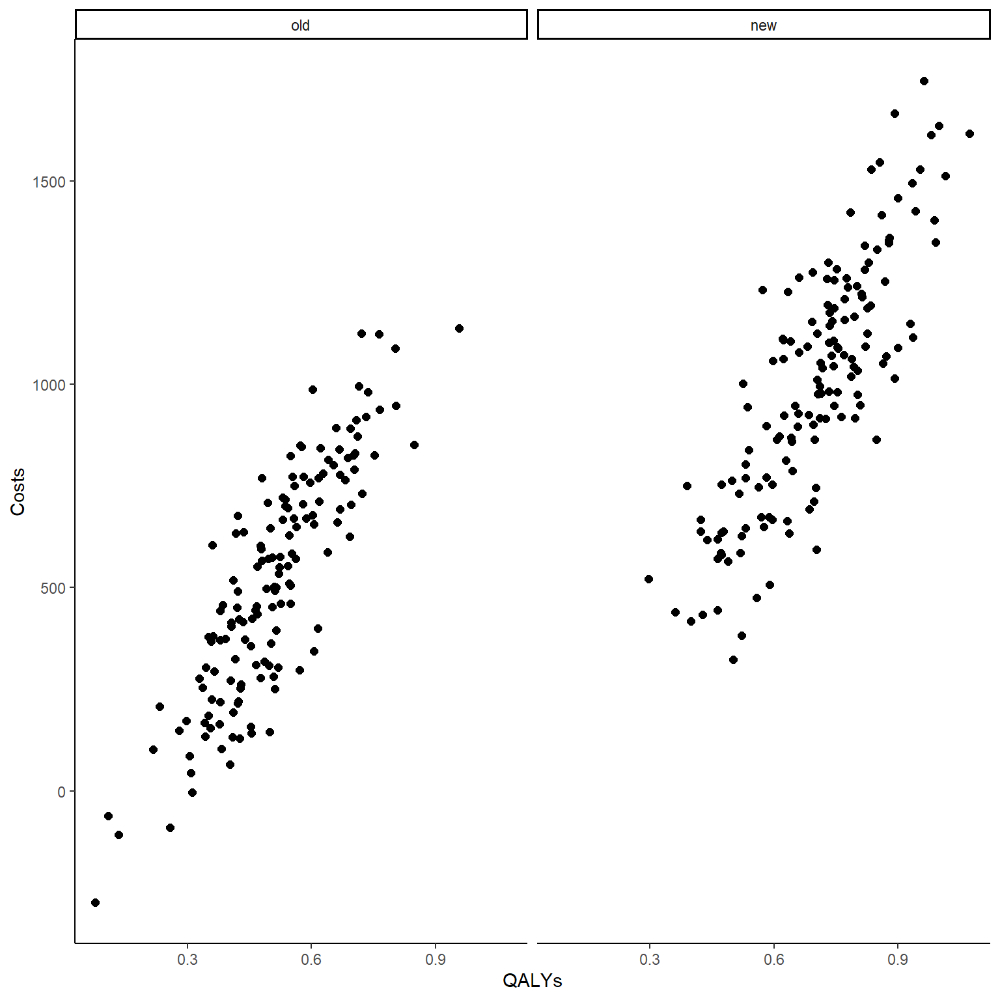

![]()
set.seed(768)
n <- 300
id <- seq(1:n)
trt <- c(rep(0, n/2),rep(1, n/2))
library(mvtnorm)
mean_e1 <- c(0.5)
mean_c1 <- c(500)
mean_e2 <- c(0.7)
mean_c2 <- c(1000)
sigma_e <- 0.15
sigma_c <- 300
Mean_ec <- c(0,0)
Sigma_ec <- diag(2)
Sigma_ec[1,2] <- Sigma_ec[2,1] <- 0.85
biv_ec1_raw <- rmvnorm(n/2,mean = Mean_ec, sigma = Sigma_ec)
biv_ec2_raw <- rmvnorm(n/2,mean = Mean_ec, sigma = Sigma_ec)
biv_ec1_raw[,1] <- (biv_ec1_raw[,1])*sigma_e + mean_e1
biv_ec1_raw[,2] <- (biv_ec1_raw[,2])*sigma_c + mean_c1
biv_ec2_raw[,1] <- (biv_ec2_raw[,1])*sigma_e + mean_e2
biv_ec2_raw[,2] <- (biv_ec2_raw[,2])*sigma_c + mean_c2
QALYs <- c(biv_ec1_raw[,1],biv_ec2_raw[,1])
Costs <- c(biv_ec1_raw[,2],biv_ec2_raw[,2])
data_sim_ec <- data.frame(id, trt, QALYs, Costs)
data_sim_ec <- data_sim_ec[sample(1:nrow(data_sim_ec)), ]How to handle correlated data in economic evaluations
Quarto
R
Academia
health economics

Hi everybody, as per usual I am here posting (again!) to continue the thread about cost-effectiveness analysis. Last time we discussed the importance of modelling CEA data at the longitudinal level when some missingness occurs in the outcome variables, i.e. costs and/or utilities. Today we take a step back and focus once more at the aggregated level, i.e. we assume that we already calculated total costs and QALYs over the trial duration and that no missingness occurred (I know very unrealistic!). The main reason for this is that I would like to keep the analysis framework relatively simple in order to focus on today’s topic: correlation.
As perhaps you already know, when analysing bivariate outcome data (such as costs and QALYs), it is important that the potential correlation between the variables is taken into account at the modelling stage of the statistical analysis. Indeed, so far we have ignored correlation and modelled the two outcomes (either at the aggregated or longitudinal level) separately, therefore assuming independence between the two types of variables. This, however, can be a quite strict assumption as in practice it makes sence that the two types of outcome variables show at least some degree of association, i.e. patients receiving a new and more expensive intervention may be more likely to observe higher improvements in their benefit measures compared to those receiving a cheaper control. You can also find the same principle within the more classical statistical analysis framework of hypothesis testing, for example when considering the difference between an independent sample vs paired sample t-test. By recognising the dependence in the data in the calculation of the test statistic (specifically in the standard error calculation), uncertainty about the parameters of interest can be decreased and more accurate inferences can be drawn. The same idea applies also when analysing CEA data in that, when outcomes are strongly associated between each other, proper recognition of this dependence allows to derive more precise (i.e. less uncertain) estimates about the mean cost/QALYs incrementals.
For example, let’s start by simulating some correlated bivariate CEA data for a total of \(300\) patients assigned to two competing intervention groups (\(t=0,1\)).
In the code above I simulated first bivariate standard normal data within each arm to ensure the desired correlation level between the variables (easy to specify on standard normal scale) and then apply a transformation to give each arm and variable a pre-defined level of standard deviation and mean. This way, even on a different scale, the correlation between the outcome variables within each arm is (generally) preserved. We can also check this by computing the empirical correlation between the costs and QALYs variables as well as by plotting the bivariate data.
#empirical correlation between e and c (across groups)
cor(data_sim_ec$QALYs,data_sim_ec$Costs)[1] 0.8937574#scatterplot of e and c data by group
library(ggplot2)
data_sim_ec$trtf <- factor(data_sim_ec$trt)
levels(data_sim_ec$trtf) <- c("old","new")
ggplot(data_sim_ec, aes(x=QALYs, y=Costs)) +
geom_point(size=2, shape=16) + theme_classic() +
facet_wrap(~trtf)
Both the computed correlation and graphs clearly indicate the existence of a strong positive (linear) correlation between the outcomes within each arm. To demonstrate the point I was making before about the importance to account for this correlation in our analysis, let’s see what happens if we simply ignore it and fit two separate models to the outcome data, e.g. to keep things simple let’s consider a standard linear regression framework with treatment as the only predictor (in theory other covariates could be included if desired):
\[ \text{QALYs}=\alpha_0 + \alpha_1 \text{trt} + \varepsilon_e, \]
\[ \text{Costs}=\beta_0 + \beta_1 \text{trt} + \varepsilon_c, \]
where \(\boldsymbol \alpha\) and \(\boldsymbol \beta\) are the set of regression coefficients including the intercepts and slopes of the two models, while \(\boldsymbol \varepsilon\) is the set of two error terms, each assumed to be normally distributed with mean 0 and variance \(\sigma^2_{\varepsilon}\). If we fit the model in R we obtain:
lm_e <- lm(QALYs ~ trtf, data = data_sim_ec)
summary(lm_e)
Call:
lm(formula = QALYs ~ trtf, data = data_sim_ec)
Residuals:
Min 1Q Median 3Q Max
-0.43152 -0.10173 0.00383 0.09873 0.44933
Coefficients:
Estimate Std. Error t value Pr(>|t|)
(Intercept) 0.50807 0.01227 41.42 <2e-16 ***
trtfnew 0.19135 0.01735 11.03 <2e-16 ***
---
Signif. codes: 0 '***' 0.001 '**' 0.01 '*' 0.05 '.' 0.1 ' ' 1
Residual standard error: 0.1502 on 298 degrees of freedom
Multiple R-squared: 0.2899, Adjusted R-squared: 0.2875
F-statistic: 121.7 on 1 and 298 DF, p-value: < 2.2e-16ci_lm_e <- confint(lm_e)
ci_lm_e 2.5 % 97.5 %
(Intercept) 0.4839332 0.5322124
trtfnew 0.1572113 0.2254883lm_c <- lm(Costs ~ trtf, data = data_sim_ec)
summary(lm_c)
Call:
lm(formula = Costs ~ trtf, data = data_sim_ec)
Residuals:
Min 1Q Median 3Q Max
-787.45 -232.10 13.89 207.59 743.68
Coefficients:
Estimate Std. Error t value Pr(>|t|)
(Intercept) 513.01 23.89 21.48 <2e-16 ***
trtfnew 490.08 33.78 14.51 <2e-16 ***
---
Signif. codes: 0 '***' 0.001 '**' 0.01 '*' 0.05 '.' 0.1 ' ' 1
Residual standard error: 292.6 on 298 degrees of freedom
Multiple R-squared: 0.4139, Adjusted R-squared: 0.4119
F-statistic: 210.5 on 1 and 298 DF, p-value: < 2.2e-16ci_lm_c <- confint(lm_c)
ci_lm_c 2.5 % 97.5 %
(Intercept) 466.0050 560.0242
trtfnew 423.5962 556.5593We can see that in both models treatment is a significant variable in accordance with what specified in our simulation design, i.e. a mean population difference between groups of \(0.2\) for QALYs and \(500\) for Costs (estimates of parameters very close to dgp values). We can also see that the confidence intervals for these parameters cover the ranges \([0.1572113; 0.2254883]\) for QALYs and \([423.5961573; 556.5593191]\) for Costs.
Well, so far we have ignored the correlation between the two variables. Now, let’s try to take that into account at the modelling stage. Different approaches can be used to achieve this task and here we will only look at a couple of these. Perhaps, the most intuitive choice is simply to include Costs and QALYs as predictor in the model for the other outcome. Indeed, since each otucome is correlated with the other and also with treatment, they essentially represent “confounders” that could be included into the model to obtain more precise estimates around the regression coefficients. Thus, the models become:
\[ \text{QALYs}=\alpha_0 + \alpha_1 \text{trt} + \alpha_2\text{Costs} + \varepsilon_e, \]
\[ \text{Costs}=\beta_0 + \beta_1 \text{trt} + \beta_2\text{QALYs} + \varepsilon_c, \]
and in R we can fit the models by typing:
lm_e2 <- lm(QALYs ~ trtf + Costs, data = data_sim_ec)
summary(lm_e2)
Call:
lm(formula = QALYs ~ trtf + Costs, data = data_sim_ec)
Residuals:
Min 1Q Median 3Q Max
-0.227528 -0.056729 0.000873 0.045915 0.209448
Coefficients:
Estimate Std. Error t value Pr(>|t|)
(Intercept) 2.846e-01 1.038e-02 27.414 <2e-16 ***
trtfnew -2.217e-02 1.201e-02 -1.845 0.066 .
Costs 4.357e-04 1.577e-05 27.626 <2e-16 ***
---
Signif. codes: 0 '***' 0.001 '**' 0.01 '*' 0.05 '.' 0.1 ' ' 1
Residual standard error: 0.07965 on 297 degrees of freedom
Multiple R-squared: 0.8011, Adjusted R-squared: 0.7997
F-statistic: 598 on 2 and 297 DF, p-value: < 2.2e-16lm_c2 <- lm(Costs ~ trtf + QALYs, data = data_sim_ec)
summary(lm_c2)
Call:
lm(formula = Costs ~ trtf + QALYs, data = data_sim_ec)
Residuals:
Min 1Q Median 3Q Max
-415.32 -105.24 6.42 101.25 440.31
Coefficients:
Estimate Std. Error t value Pr(>|t|)
(Intercept) -326.46 32.92 -9.917 < 2e-16 ***
trtfnew 173.92 21.25 8.183 8.23e-15 ***
QALYs 1652.27 59.81 27.626 < 2e-16 ***
---
Signif. codes: 0 '***' 0.001 '**' 0.01 '*' 0.05 '.' 0.1 ' ' 1
Residual standard error: 155.1 on 297 degrees of freedom
Multiple R-squared: 0.8358, Adjusted R-squared: 0.8347
F-statistic: 756 on 2 and 297 DF, p-value: < 2.2e-16You see that the estimates for the treatment effect are now off and this is simply because now we also have an additional variable in each model. In order to retrieve the correct estimates in terms of mean difference between arms we can either include the new predictors as centred variables (i.e. mean of 0) or calculate the marginal means of each outcome as linear combinations of the parameters from the model. In R the second approach can be easily achieved using the emmeans package.
library(emmeans)
mu_e <- emmeans(lm_e2, ~ trtf + Costs)
delta_QALYs <- contrast(mu_e, list(QALYs = c(0,1)))
delta_QALYs contrast estimate SE df t.ratio p.value
QALYs 0.593 0.00756 297 78.345 <.0001confint(delta_QALYs) contrast estimate SE df lower.CL upper.CL
QALYs 0.593 0.00756 297 0.578 0.608
Confidence level used: 0.95 mu_c <- emmeans(lm_c2, ~ trtf + QALYs)
delta_Totalcosts <- contrast(mu_c, list(Tcosts = c(0,1)))
delta_Totalcosts contrast estimate SE df t.ratio p.value
Tcosts 845 13.9 297 60.805 <.0001confint(delta_Totalcosts) contrast estimate SE df lower.CL upper.CL
Tcosts 845 13.9 297 818 872
Confidence level used: 0.95 You can see how the confidence intervals are now much narrower compared to what obtained under the independent models and this is precisely because of the fact that, when deriving these estimates, the correlation between the outcomes has been taken into account, thus allowing to reduce the uncertainty around the quantities estimated. Notice that estimates for the trt effect changes compared to the independent models also in terms of point estimates simply because when simulating each type of outcome data the mean outcome difference between groups was not affected by the other type of outcome. In reality, it may be plausible that the actual trt effect is also affected by the other outcome, thus making the inclusion of QALYs and Costs into the model for the other variable actually relevant in order to retrieve adjusted estimates for the trt effect.
Despite allowing the inclusion of one outcome into the model for the other outcome, thus accounting for correlation between the two, a possible limitation of the above approach is that it requires both outcome variables to be fully observed. In practice this may be difficult to obtain and inclusion of QALYs or Costs are predictors into the other model may substantially reduce the available sample size to estimate the trt effects, i.e. individuals with missing values are discarded from the analyses, potentially leading to a situation in which estimates for the mean difference between groups for QALYs and Costs are derived based on a different number of observations. A possible solution to this problem is the implementation of the so-called Seemingly Unrelated Regression (SUR) models which allow the simultaneous fitting of multiple linear regression models while also indirectly taking into account the correlation between the outcomes of each model. The models look something like a “system” of independent models equations:
\[ \text{QALYs}=\alpha_0 + \alpha_1 \text{trt} + \varepsilon_e, \]
\[ \text{Costs}=\beta_0 + \beta_1 \text{trt} + \varepsilon_c, \]
with the error terms \(\boldsymbol \varepsilon\) that are assumed to be independent between observations but that may have cross-equation correlations between observations \(i=1,\ldots,n\), i.e. we assume that \(\text{E}[\varepsilon_{ie} \varepsilon_{ic} \mid \text{trt}]=0\) BUT \(\text{E}[\varepsilon_{ie} \varepsilon_{je} \mid \text{trt}]=\sigma_{ij}\) and \(\text{E}[\varepsilon_{ic} \varepsilon_{jc} \mid \text{trt}]=\sigma_{ij}\). The main idea behind the approach is that it allows to capture the correlation between different individuals within each outcome regression model. In fact, it can be shown to be equivalent to standard OLS models when no cross-equation correlations between the error terms are present. Since the purpose of this post is to illustrate the approach, rather than a theoretical discussion about it, I will simply avoid a lengthy explanation of the methods and go straight to the point. We can fit these models in R using the systemfit package.
library(systemfit)
sur_e_formula <- QALYs ~ trtf
sur_c_formula <- Costs ~ trtf
system <- list(QALYs = sur_e_formula, Costs = sur_c_formula)
sur_ec <- systemfit(system, data = data_sim_ec)
summary(sur_ec)
systemfit results
method: OLS
N DF SSR detRCov OLS-R2 McElroy-R2
system 600 596 25506409 541.154 0.41391 0.266266
N DF SSR MSE RMSE R2 Adj R2
QALYs 300 298 6.72567e+00 2.2569e-02 0.150231 0.289925 0.287542
Costs 300 298 2.55064e+07 8.5592e+04 292.561029 0.413910 0.411943
The covariance matrix of the residuals
QALYs Costs
QALYs 0.0225694 37.2908
Costs 37.2907794 85591.9554
The correlations of the residuals
QALYs Costs
QALYs 1.000000 0.848448
Costs 0.848448 1.000000
OLS estimates for 'QALYs' (equation 1)
Model Formula: QALYs ~ trtf
Estimate Std. Error t value Pr(>|t|)
(Intercept) 0.5080728 0.0122663 41.4202 < 2.22e-16 ***
trtfnew 0.1913498 0.0173472 11.0306 < 2.22e-16 ***
---
Signif. codes: 0 '***' 0.001 '**' 0.01 '*' 0.05 '.' 0.1 ' ' 1
Residual standard error: 0.150231 on 298 degrees of freedom
Number of observations: 300 Degrees of Freedom: 298
SSR: 6.72567 MSE: 0.022569 Root MSE: 0.150231
Multiple R-Squared: 0.289925 Adjusted R-Squared: 0.287542
OLS estimates for 'Costs' (equation 2)
Model Formula: Costs ~ trtf
Estimate Std. Error t value Pr(>|t|)
(Intercept) 513.0146 23.8875 21.4763 < 2.22e-16 ***
trtfnew 490.0777 33.7820 14.5070 < 2.22e-16 ***
---
Signif. codes: 0 '***' 0.001 '**' 0.01 '*' 0.05 '.' 0.1 ' ' 1
Residual standard error: 292.561029 on 298 degrees of freedom
Number of observations: 300 Degrees of Freedom: 298
SSR: 25506402.718561 MSE: 85591.955431 Root MSE: 292.561029
Multiple R-Squared: 0.41391 Adjusted R-Squared: 0.411943 ci_sur_ec <- confint(sur_ec)
ci_sur_ec 2.5 % 97.5 %
QALYs_(Intercept) 0.484 0.532
QALYs_trtfnew 0.157 0.225
Costs_(Intercept) 466.005 560.024
Costs_trtfnew 423.596 556.559We can see how the estimates and confidence intervals are those obtained from the independent models. From this it seems that they actually do not provide any advantage over fitting the models for each outcome separately and in this specific case that is correct. However, when the equations in the system are associated with different predictors (e.g. account for some comorbidities in the QALYs model but not in the Costs model), then differences between standard OLS estimate and SUR estimates will arise. Indeed, since SUR allows to capture correlations between observations for different individuals for each outcome separately, then the inclusion of additional predictors in each model will provide extra-information to estimate these correlations. Since this type of extra-information is specific to the outcome model chosen, then difference in the number of predictors will allow to obtain more precise (i.e. less uncertain) estimate for the trt effect in each equation. By carefully choosing the predictors included in each equation, SURs allow to improve the efficiency of the estimates of the regression coefficients based on the information provided within each equation of the system.
I hope this post was helpful for anybody who wants to perform SUR or has heard about it and was not sure when the method is applicable and in which case it can actually be beneficial compared to simple independent OLS analysis. It certainly provides a more appropriate way to model bivariate data compared to assuming compelte independence between the outcome models but it has also some limitations in that it does not correspond to a proper joint modelling of the outcomes. Next times I will also discuss a different approach which can allow to overcome the limitations of SUR in order to account for the correlation between outcomes in a proper way. This is joint modelling in which both outcomes are assumed to follow some multivariate distribution (e.g. bivariate normal) in which the dependence between observations and outcomes can be fully specified through parameters. Till next time!